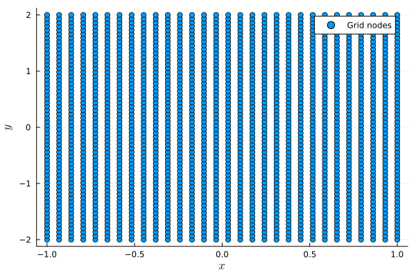

Linear advection equation in two dimensions
In this tutorial, we consider the linear advection equation in two dimensions
\[\begin{aligned} \partial_t u(t,x,y) + a_1\partial_x u(t,x,y) + a_2\partial_y u(t,x,y) &= 0, && t \in (0,T), (x, y)\in\Omega, \\ u(0,x,y) &= u_0(x,y), && (x,y) \in\Omega, \\ u(t,x,y) &= g(t,x,y), && t \in (0,T), (x,y) \in\Gamma_-. \end{aligned}\]
Here, $\Omega$ is a two-dimensional domain, and $\Gamma_- = \{(x, y)\in\partial\Omega|\boldsymbol{a}\cdot\boldsymbol{n}(\boldsymbol{x}) < 0\}$ is the inflow boundary, where $\boldsymbol{a} = [a_1, a_2]^T$ and $\boldsymbol{n}(\boldsymbol{x})$ is the outwards pointing normal vector at $\boldsymbol{x} = [x, y]^T$. We will use a rectangular domain $\Omega = [x_{\min}, x_{\max}]\times[y_{\min}, y_{\max}]$ and a tensor-product summation-by-parts operator, which is based on one-dimensional SBP operators in each direction. Based on one-dimensional SBP operators $D_1$ on $N_x$ nodes in $[x_{\min}, x_{\max}]$ and $D_2$ on $N_y$ nodes in $[y_{\min}, y_{\max}]$, we can construct a two-dimensional SBP operator $D$ on $N = N_x\cdot N_y$ nodes utilizing Kronecker products.
using SummationByPartsOperators, OrdinaryDiffEq
using LaTeXStrings; using Plots: Plots, scatter, scatter!, savefig
using LinearAlgebra: norm, dot
# Define the domain
xmin, xmax = -1.0, 1.0
ymin, ymax = -2.0, 2.0
N_x, N_y = 30, 60
# Construct one-dimensional SBP operators
D_1 = derivative_operator(MattssonNordström2004(), derivative_order = 1, accuracy_order = 4,
xmin = xmin, xmax = xmax, N = N_x)
D_2 = derivative_operator(MattssonNordström2004(), derivative_order = 1, accuracy_order = 4,
xmin = ymin, xmax = ymax, N = N_y)
# Construct the two-dimensional SBP operator
D = tensor_product_operator_2D(D_1, D_2)2-dimensional tensor product operator {T=Float64} on 1800 nodesThe nodes are stored as a Vector of SVectors. We can visualize the grid as follows:
nodes = grid(D)
scatter(first.(nodes), last.(nodes), label = "Grid nodes", xlabel = L"x", ylabel = L"y")
savefig("two_dimensional_grid.png");"/home/runner/work/SummationByPartsOperators.jl/SummationByPartsOperators.jl/docs/build/tutorials/two_dimensional_grid.png"
A multi-dimensional SBP operators stores differentiation matrices in each direction. They can be accessed by indexing the operator:
D_x = D[1]1800×1800 SparseArrays.SparseMatrixCSC{Float64, Int64} with 6960 stored entries:
⣑⢜⢮⡳⡷⡄⠀⠀⠀⠀⠀⠀⠀⠀⠀⠀⠀⠀⠀⠀⠀⠀⠀⠀⠀⠀⠀⠀⠀⠀⠀⠀⠀⠀⠀⠀⠀⠀⠀⠀
⢮⡳⣄⠙⢦⡰⣄⠀⠀⠀⠀⠀⠀⠀⠀⠀⠀⠀⠀⠀⠀⠀⠀⠀⠀⠀⠀⠀⠀⠀⠀⠀⠀⠀⠀⠀⠀⠀⠀⠀
⠙⠯⢈⡳⣄⠙⢮⡳⣄⠀⠀⠀⠀⠀⠀⠀⠀⠀⠀⠀⠀⠀⠀⠀⠀⠀⠀⠀⠀⠀⠀⠀⠀⠀⠀⠀⠀⠀⠀⠀
⠀⠀⠀⠙⢮⡳⣄⠙⢮⡳⣄⠀⠀⠀⠀⠀⠀⠀⠀⠀⠀⠀⠀⠀⠀⠀⠀⠀⠀⠀⠀⠀⠀⠀⠀⠀⠀⠀⠀⠀
⠀⠀⠀⠀⠀⠙⢮⡳⣄⠙⢮⡳⣄⠀⠀⠀⠀⠀⠀⠀⠀⠀⠀⠀⠀⠀⠀⠀⠀⠀⠀⠀⠀⠀⠀⠀⠀⠀⠀⠀
⠀⠀⠀⠀⠀⠀⠀⠙⢮⡳⣄⠙⢮⡳⣄⠀⠀⠀⠀⠀⠀⠀⠀⠀⠀⠀⠀⠀⠀⠀⠀⠀⠀⠀⠀⠀⠀⠀⠀⠀
⠀⠀⠀⠀⠀⠀⠀⠀⠀⠙⢮⡳⣄⠙⢮⡳⣄⠀⠀⠀⠀⠀⠀⠀⠀⠀⠀⠀⠀⠀⠀⠀⠀⠀⠀⠀⠀⠀⠀⠀
⠀⠀⠀⠀⠀⠀⠀⠀⠀⠀⠀⠙⢮⡳⣄⠙⢮⡳⣄⠀⠀⠀⠀⠀⠀⠀⠀⠀⠀⠀⠀⠀⠀⠀⠀⠀⠀⠀⠀⠀
⠀⠀⠀⠀⠀⠀⠀⠀⠀⠀⠀⠀⠀⠙⢮⡳⣄⠙⢮⡳⣄⠀⠀⠀⠀⠀⠀⠀⠀⠀⠀⠀⠀⠀⠀⠀⠀⠀⠀⠀
⠀⠀⠀⠀⠀⠀⠀⠀⠀⠀⠀⠀⠀⠀⠀⠙⢮⡳⣄⠙⢮⡳⣄⠀⠀⠀⠀⠀⠀⠀⠀⠀⠀⠀⠀⠀⠀⠀⠀⠀
⠀⠀⠀⠀⠀⠀⠀⠀⠀⠀⠀⠀⠀⠀⠀⠀⠀⠙⢮⡳⣄⠙⢮⡳⣄⠀⠀⠀⠀⠀⠀⠀⠀⠀⠀⠀⠀⠀⠀⠀
⠀⠀⠀⠀⠀⠀⠀⠀⠀⠀⠀⠀⠀⠀⠀⠀⠀⠀⠀⠙⢮⡳⣄⠙⢮⡳⣄⠀⠀⠀⠀⠀⠀⠀⠀⠀⠀⠀⠀⠀
⠀⠀⠀⠀⠀⠀⠀⠀⠀⠀⠀⠀⠀⠀⠀⠀⠀⠀⠀⠀⠀⠙⢮⡳⣄⠙⢮⡳⣄⠀⠀⠀⠀⠀⠀⠀⠀⠀⠀⠀
⠀⠀⠀⠀⠀⠀⠀⠀⠀⠀⠀⠀⠀⠀⠀⠀⠀⠀⠀⠀⠀⠀⠀⠙⢮⡳⣄⠙⢮⡳⣄⠀⠀⠀⠀⠀⠀⠀⠀⠀
⠀⠀⠀⠀⠀⠀⠀⠀⠀⠀⠀⠀⠀⠀⠀⠀⠀⠀⠀⠀⠀⠀⠀⠀⠀⠙⢮⡳⣄⠙⢮⡳⣄⠀⠀⠀⠀⠀⠀⠀
⠀⠀⠀⠀⠀⠀⠀⠀⠀⠀⠀⠀⠀⠀⠀⠀⠀⠀⠀⠀⠀⠀⠀⠀⠀⠀⠀⠙⢮⡳⣄⠙⢮⡳⣄⠀⠀⠀⠀⠀
⠀⠀⠀⠀⠀⠀⠀⠀⠀⠀⠀⠀⠀⠀⠀⠀⠀⠀⠀⠀⠀⠀⠀⠀⠀⠀⠀⠀⠀⠙⢮⡳⣄⠙⢮⡳⣄⠀⠀⠀
⠀⠀⠀⠀⠀⠀⠀⠀⠀⠀⠀⠀⠀⠀⠀⠀⠀⠀⠀⠀⠀⠀⠀⠀⠀⠀⠀⠀⠀⠀⠀⠙⢮⡳⣄⠙⢮⡁⣲⣄
⠀⠀⠀⠀⠀⠀⠀⠀⠀⠀⠀⠀⠀⠀⠀⠀⠀⠀⠀⠀⠀⠀⠀⠀⠀⠀⠀⠀⠀⠀⠀⠀⠀⠙⠎⠳⣄⠙⢮⡳
⠀⠀⠀⠀⠀⠀⠀⠀⠀⠀⠀⠀⠀⠀⠀⠀⠀⠀⠀⠀⠀⠀⠀⠀⠀⠀⠀⠀⠀⠀⠀⠀⠀⠀⠘⢾⢮⡳⡕⢍D_y = D[2]1800×1800 SparseArrays.SparseMatrixCSC{Float64, Int64} with 7080 stored entries:
⠻⣦⡀⠀⠀⠀⠀⠀⠀⠀⠀⠀⠀⠀⠀⠀⠀⠀⠀⠀⠀⠀⠀⠀⠀⠀⠀⠀⠀⠀⠀⠀⠀⠀⠀⠀⠀⠀⠀⠀
⠀⠈⠻⣦⡀⠀⠀⠀⠀⠀⠀⠀⠀⠀⠀⠀⠀⠀⠀⠀⠀⠀⠀⠀⠀⠀⠀⠀⠀⠀⠀⠀⠀⠀⠀⠀⠀⠀⠀⠀
⠀⠀⠀⠈⠻⢆⡀⠀⠀⠀⠀⠀⠀⠀⠀⠀⠀⠀⠀⠀⠀⠀⠀⠀⠀⠀⠀⠀⠀⠀⠀⠀⠀⠀⠀⠀⠀⠀⠀⠀
⠀⠀⠀⠀⠀⠈⠻⣦⡀⠀⠀⠀⠀⠀⠀⠀⠀⠀⠀⠀⠀⠀⠀⠀⠀⠀⠀⠀⠀⠀⠀⠀⠀⠀⠀⠀⠀⠀⠀⠀
⠀⠀⠀⠀⠀⠀⠀⠈⠻⣦⡀⠀⠀⠀⠀⠀⠀⠀⠀⠀⠀⠀⠀⠀⠀⠀⠀⠀⠀⠀⠀⠀⠀⠀⠀⠀⠀⠀⠀⠀
⠀⠀⠀⠀⠀⠀⠀⠀⠀⠈⠻⣦⡀⠀⠀⠀⠀⠀⠀⠀⠀⠀⠀⠀⠀⠀⠀⠀⠀⠀⠀⠀⠀⠀⠀⠀⠀⠀⠀⠀
⠀⠀⠀⠀⠀⠀⠀⠀⠀⠀⠀⠈⠻⣦⡀⠀⠀⠀⠀⠀⠀⠀⠀⠀⠀⠀⠀⠀⠀⠀⠀⠀⠀⠀⠀⠀⠀⠀⠀⠀
⠀⠀⠀⠀⠀⠀⠀⠀⠀⠀⠀⠀⠀⠈⠻⣦⡀⠀⠀⠀⠀⠀⠀⠀⠀⠀⠀⠀⠀⠀⠀⠀⠀⠀⠀⠀⠀⠀⠀⠀
⠀⠀⠀⠀⠀⠀⠀⠀⠀⠀⠀⠀⠀⠀⠀⠈⠻⣦⡀⠀⠀⠀⠀⠀⠀⠀⠀⠀⠀⠀⠀⠀⠀⠀⠀⠀⠀⠀⠀⠀
⠀⠀⠀⠀⠀⠀⠀⠀⠀⠀⠀⠀⠀⠀⠀⠀⠀⠈⠻⣦⠀⠀⠀⠀⠀⠀⠀⠀⠀⠀⠀⠀⠀⠀⠀⠀⠀⠀⠀⠀
⠀⠀⠀⠀⠀⠀⠀⠀⠀⠀⠀⠀⠀⠀⠀⠀⠀⠀⠀⠀⠻⣦⡀⠀⠀⠀⠀⠀⠀⠀⠀⠀⠀⠀⠀⠀⠀⠀⠀⠀
⠀⠀⠀⠀⠀⠀⠀⠀⠀⠀⠀⠀⠀⠀⠀⠀⠀⠀⠀⠀⠀⠈⠻⣦⡀⠀⠀⠀⠀⠀⠀⠀⠀⠀⠀⠀⠀⠀⠀⠀
⠀⠀⠀⠀⠀⠀⠀⠀⠀⠀⠀⠀⠀⠀⠀⠀⠀⠀⠀⠀⠀⠀⠀⠈⠻⣦⡀⠀⠀⠀⠀⠀⠀⠀⠀⠀⠀⠀⠀⠀
⠀⠀⠀⠀⠀⠀⠀⠀⠀⠀⠀⠀⠀⠀⠀⠀⠀⠀⠀⠀⠀⠀⠀⠀⠀⠈⠻⣦⡀⠀⠀⠀⠀⠀⠀⠀⠀⠀⠀⠀
⠀⠀⠀⠀⠀⠀⠀⠀⠀⠀⠀⠀⠀⠀⠀⠀⠀⠀⠀⠀⠀⠀⠀⠀⠀⠀⠀⠈⠻⣦⡀⠀⠀⠀⠀⠀⠀⠀⠀⠀
⠀⠀⠀⠀⠀⠀⠀⠀⠀⠀⠀⠀⠀⠀⠀⠀⠀⠀⠀⠀⠀⠀⠀⠀⠀⠀⠀⠀⠀⠈⠻⣦⡀⠀⠀⠀⠀⠀⠀⠀
⠀⠀⠀⠀⠀⠀⠀⠀⠀⠀⠀⠀⠀⠀⠀⠀⠀⠀⠀⠀⠀⠀⠀⠀⠀⠀⠀⠀⠀⠀⠀⠈⠻⣦⡀⠀⠀⠀⠀⠀
⠀⠀⠀⠀⠀⠀⠀⠀⠀⠀⠀⠀⠀⠀⠀⠀⠀⠀⠀⠀⠀⠀⠀⠀⠀⠀⠀⠀⠀⠀⠀⠀⠀⠈⠱⣦⡀⠀⠀⠀
⠀⠀⠀⠀⠀⠀⠀⠀⠀⠀⠀⠀⠀⠀⠀⠀⠀⠀⠀⠀⠀⠀⠀⠀⠀⠀⠀⠀⠀⠀⠀⠀⠀⠀⠀⠈⠻⣦⡀⠀
⠀⠀⠀⠀⠀⠀⠀⠀⠀⠀⠀⠀⠀⠀⠀⠀⠀⠀⠀⠀⠀⠀⠀⠀⠀⠀⠀⠀⠀⠀⠀⠀⠀⠀⠀⠀⠀⠈⠻⣦As in the one-dimensional case, a multi-dimensional SBP operator stores the weights of a quadrature rule, which performs numerical integration in the interior of the domain. In contrast to the one-dimensional case, we also need to compute non-trivial integrals along the boundary, which means we also need to store the weights of the boundary quadrature rule. For any direction $\boldsymbol{\xi}$ ($[1, 0]^T$ for integrals in $x$-direction and $[0, 1]^T$ for integrals in $y$-direction), the boundary operator $B_{\boldsymbol{\xi}}$ approximates boundary integrals as
\[\boldsymbol{f}^T B_{\boldsymbol{\xi}} \boldsymbol{g} \approx \int_{\partial\Omega} fg(\boldsymbol{\xi}\cdot\boldsymbol{n}) ds,\]
where $f$ and $g$ are functions, $\boldsymbol{f}$ and $\boldsymbol{g}$ are their coefficients, and $\boldsymbol{n}$ is the outward-pointing normal vector at the boundary. SummationByPartsOperators.jl creates so-called mimetic boundary operators [GlaubitzKleinNordströmÖffner2023], which means that the boundary quadrature rule in a certain direction is given as a diagonal matrix with zeros on the diagonal entries corresponding to interior nodes and non-zero diagonal elements of the form $b_n = v_n(\boldsymbol{\xi}\cdot\boldsymbol{n}(\boldsymbol{x}_n))$. The operator only stores the positive weights $v_n$, but the boundary mass matrices $B_{\boldsymbol{\xi}}$ can be constructed by calling mass_matrix_boundary.
M = mass_matrix(D)
B_x = mass_matrix_boundary(D, 1)
B_y = mass_matrix_boundary(D, 2)1800×1800 LinearAlgebra.Diagonal{Float64, Vector{Float64}}:
-0.0244253 ⋅ ⋅ ⋅ ⋅ ⋅ … ⋅ ⋅ ⋅ ⋅ ⋅ ⋅
⋅ 0.0 ⋅ ⋅ ⋅ ⋅ ⋅ ⋅ ⋅ ⋅ ⋅ ⋅
⋅ ⋅ 0.0 ⋅ ⋅ ⋅ ⋅ ⋅ ⋅ ⋅ ⋅ ⋅
⋅ ⋅ ⋅ 0.0 ⋅ ⋅ ⋅ ⋅ ⋅ ⋅ ⋅ ⋅
⋅ ⋅ ⋅ ⋅ 0.0 ⋅ ⋅ ⋅ ⋅ ⋅ ⋅ ⋅
⋅ ⋅ ⋅ ⋅ ⋅ 0.0 … ⋅ ⋅ ⋅ ⋅ ⋅ ⋅
⋅ ⋅ ⋅ ⋅ ⋅ ⋅ ⋅ ⋅ ⋅ ⋅ ⋅ ⋅
⋅ ⋅ ⋅ ⋅ ⋅ ⋅ ⋅ ⋅ ⋅ ⋅ ⋅ ⋅
⋅ ⋅ ⋅ ⋅ ⋅ ⋅ ⋅ ⋅ ⋅ ⋅ ⋅ ⋅
⋅ ⋅ ⋅ ⋅ ⋅ ⋅ ⋅ ⋅ ⋅ ⋅ ⋅ ⋅
⋮ ⋮ ⋱ ⋮
⋅ ⋅ ⋅ ⋅ ⋅ ⋅ ⋅ ⋅ ⋅ ⋅ ⋅ ⋅
⋅ ⋅ ⋅ ⋅ ⋅ ⋅ ⋅ ⋅ ⋅ ⋅ ⋅ ⋅
⋅ ⋅ ⋅ ⋅ ⋅ ⋅ ⋅ ⋅ ⋅ ⋅ ⋅ ⋅
⋅ ⋅ ⋅ ⋅ ⋅ ⋅ 0.0 ⋅ ⋅ ⋅ ⋅ ⋅
⋅ ⋅ ⋅ ⋅ ⋅ ⋅ … ⋅ 0.0 ⋅ ⋅ ⋅ ⋅
⋅ ⋅ ⋅ ⋅ ⋅ ⋅ ⋅ ⋅ 0.0 ⋅ ⋅ ⋅
⋅ ⋅ ⋅ ⋅ ⋅ ⋅ ⋅ ⋅ ⋅ 0.0 ⋅ ⋅
⋅ ⋅ ⋅ ⋅ ⋅ ⋅ ⋅ ⋅ ⋅ ⋅ 0.0 ⋅
⋅ ⋅ ⋅ ⋅ ⋅ ⋅ ⋅ ⋅ ⋅ ⋅ ⋅ 0.0244253We can verify the SBP property of the two-dimensional operator in each direction:
M * D_x + D_x' * M ≈ B_xtrueM * D_y + D_y' * M ≈ B_ytrueSimilar to integrate for performing integrals in the interior, we can use integrate_boundary to perform integrals along the boundary.
A semidiscretization of the 2D linear advection equation with weakly enforced boundary conditions can be written as
\[\boldsymbol{u}_t + a_1D_x\boldsymbol{u} + a_2D_y\boldsymbol{u} = M^{-1}(a_1B_x + a_2B_y)(\boldsymbol{u} - \boldsymbol{g}),\]
where the right-hand side is the simultaneous approximation term (SAT) used for the weak imposition of the boundary conditions. The vector $\boldsymbol{g}$ contains the boundary values given by the boundary condition at the inflow boundary and is set to $\boldsymbol{u}$ on the outflow boundary, i.e., for $n = 1, \ldots, N$ we have
\[g_n = \begin{cases} g(t, \boldsymbol{x}_n) & \text{if } \boldsymbol{x}\in\Gamma_-, \\ u_n & \text{otherwise}. \end{cases}\]
a = (1.0, 2.0)
u0(x) = exp(-30 * norm(x .- (0.0, 0.0))^2)
u(t, x) = u0(x .- a .* t)
g(t, x) = u(t, x) # boundary condition from the analytical solution
u_ini = u0.(nodes)
A = a[1] * D_x + a[2] * D_y
B = inv(M) * (a[1] * B_x + a[2] * B_y)
bc = zeros(length(nodes))
p = (; a, A, B, g, D, bc)
function set_bc!(bc, u, a, g, D, t)
fill!(bc, zero(eltype(bc)))
for (i, node) in enumerate(restrict_boundary(grid(D), D))
j = boundary_indices(D)[i]
normal = normals(D)[i]
if dot(normal, a) < 0 # inflow
bc[j] = g(t, node)
else # outflow
bc[j] = u[j]
end
end
end
function linear_advection_2D!(du, u, p, t)
a, A, B, g, D, bc = p
set_bc!(bc, u, a, g, D, t)
du .= -A * u + B * (u - bc)
endlinear_advection_2D! (generic function with 1 method)Finally, we can set up the ODE problem and solve it using an explicit Runge-Kutta method with adaptive time stepping.
tspan = (0.0, 1.2)
ode = ODEProblem(linear_advection_2D!, u_ini, tspan, p)
saveat = range(tspan..., length = 100)
sol = solve(ode, Tsit5(); saveat)
using Printf; using Plots: @animate, gif
anim = @animate for i in eachindex(sol)
t = sol.t[i]
scatter(first.(nodes), last.(nodes), sol[i], label = L"u_\mathrm{numerical}")
scatter!(first.(nodes), last.(nodes), u.(Ref(t), nodes), label = L"u_\mathrm{analytical}", xlabel = "x", ylabel = "y", zlabel = "u",
title = @sprintf("t = %.2f", t), zrange = (-0.1, 1.1), legend = :topright, dpi = 170)
end
gif(anim, "example_linear_advection_2D.gif");Package versions
These results were obtained using the following versions.
using InteractiveUtils
versioninfo()
using Pkg
Pkg.status(["SummationByPartsOperators", "OrdinaryDiffEq"],
mode=PKGMODE_MANIFEST)Julia Version 1.6.7
Commit 3b76b25b64 (2022-07-19 15:11 UTC)
Platform Info:
OS: Linux (x86_64-pc-linux-gnu)
CPU: AMD EPYC 7763 64-Core Processor
WORD_SIZE: 64
LIBM: libopenlibm
LLVM: libLLVM-11.0.1 (ORCJIT, generic)
Environment:
JULIA_PKG_SERVER_REGISTRY_PREFERENCE = eager
Status `~/work/SummationByPartsOperators.jl/SummationByPartsOperators.jl/docs/Manifest.toml`
[1dea7af3] OrdinaryDiffEq v6.58.2
[9f78cca6] SummationByPartsOperators v0.5.79 `~/work/SummationByPartsOperators.jl/SummationByPartsOperators.jl`- GlaubitzKleinNordströmÖffner2023Jan Glaubitz, Simon-Christian Klein, Jan Nordström, Philipp Öffner (2023): Multi-dimensional summation-by-parts operators for general function spaces: Theory and construction, Journal of Computational Physics 491, 112370, DOI: 10.1016/j.jcp.2023.112370.